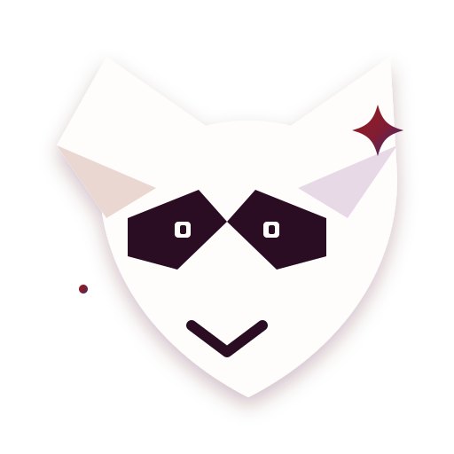
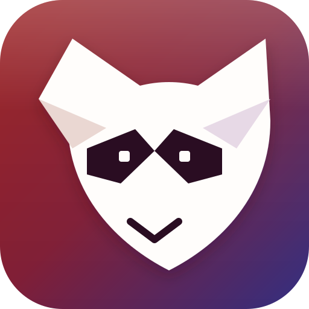

A small fox that helps you move.
Three additional animated logo directions plus a compact mascot character designed for the browser extension popup, side panel, loading state, and job detection moments.
More animated mark directions
Each prototype keeps the transparent Pixel / Bold fox silhouette and the blood-wine plus purple identity.

02 · Come Across
Slides into view from the left, overshoots gently, settles in the center, and looks across the page.
03 · Calm Idle
Subtle breathe movement with blinking and eye scanning for a non-distracting default state.Extension character prototype
A compact helper character for the extension. It carries a light purple satchel for profile data and answers.

UplyFox AssistantHi! I found a question in this application. Your verified profile has a strong answer.
“My experience building reliable TypeScript products makes this role a strong match. I’m happy to share a specific project example.”
1 · Detect2 · Match profile3 · Suggest4 · Review & insert